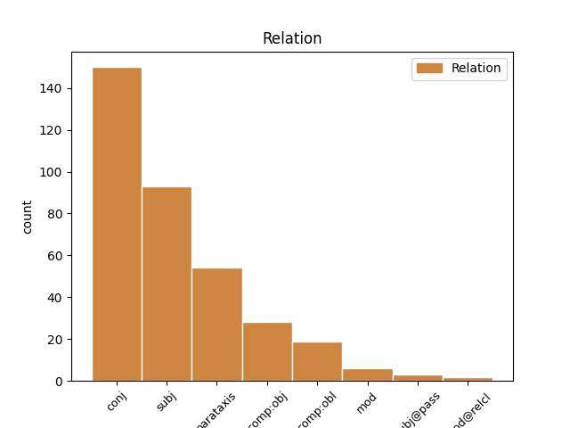
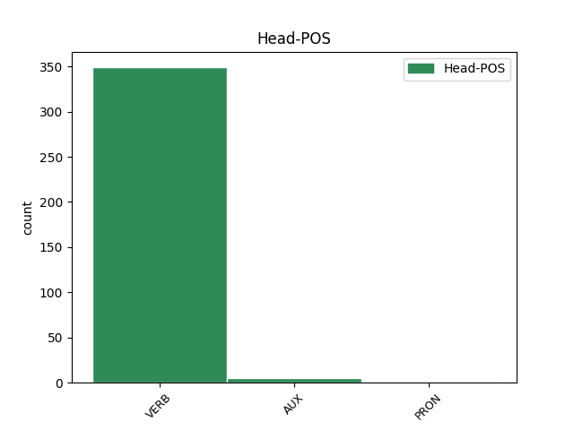
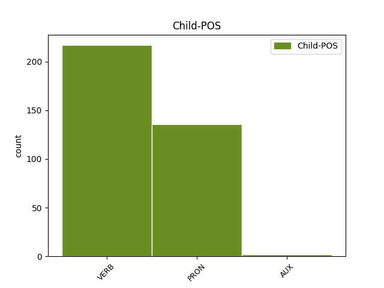

Distribution of features within this leaf



Agreement Rules sorted by frequency.
- When the dependent token is the conjunct(conj) of the head token,
1 Контролируемый _ _ _ _ 0 _ _ _
2 интерфейсом _ _ _ _ 0 _ _ _
3 захвата _ _ _ _ 0 _ _ _
4 движения _ _ _ _ 0 _ _ _
5 , _ _ _ _ 0 _ _ _
6 Geminoid _ _ _ _ 0 _ _ _
7 HI _ _ _ _ 0 _ _ _
8 - _ _ _ _ 0 _ _ _
9 1 _ _ _ _ 0 _ _ _
10 Может мочь VERB VBC Aspect=Imp|Mood=Ind|Number=Sing|Person=3|Tense=Pres|VerbForm=Fin|Voice=Act 0 _ _ _
11 имитировать _ _ _ _ 0 _ _ _
12 тело _ _ _ _ 0 _ _ _
13 Исигуро _ _ _ _ 0 _ _ _
14 и _ _ _ _ 0 _ _ _
15 мимикой _ _ _ _ 0 _ _ _
16 , _ _ _ _ 0 _ _ _
17 и _ _ _ _ 0 _ _ _
18 он _ _ _ _ 0 _ _ _
19 может мочь VERB VBC Aspect=Imp|Mood=Ind|Number=Sing|Person=3|Tense=Pres|VerbForm=Fin|Voice=Act 10 conj _ _
20 воспроизводить _ _ _ _ 0 _ _ _
21 голос _ _ _ _ 0 _ _ _
22 синхронно _ _ _ _ 0 _ _ _
23 с _ _ _ _ 0 _ _ _
24 его _ _ _ _ 0 _ _ _
25 движениями _ _ _ _ 0 _ _ _
26 и _ _ _ _ 0 _ _ _
27 осанку _ _ _ _ 0 _ _ _
28 . _ _ _ _ 0 _ _ _
1 Контролируемый _ _ _ _ 0 _ _ _
2 интерфейсом _ _ _ _ 0 _ _ _
3 захвата _ _ _ _ 0 _ _ _
4 движения _ _ _ _ 0 _ _ _
5 , _ _ _ _ 0 _ _ _
6 Geminoid _ _ _ _ 0 _ _ _
7 HI _ _ _ _ 0 _ _ _
8 - _ _ _ _ 0 _ _ _
9 1 _ _ _ _ 0 _ _ _
10 Может _ _ _ _ 0 _ _ _
11 имитировать _ _ _ _ 0 _ _ _
12 тело _ _ _ _ 0 _ _ _
13 Исигуро _ _ _ _ 0 _ _ _
14 и _ _ _ _ 0 _ _ _
15 мимикой _ _ _ _ 0 _ _ _
16 , _ _ _ _ 0 _ _ _
17 и _ _ _ _ 0 _ _ _
18 он он PRON PRP Case=Nom|Gender=Masc|Number=Sing|Person=3 19 subj _ _
19 может мочь VERB VBC Aspect=Imp|Mood=Ind|Number=Sing|Person=3|Tense=Pres|VerbForm=Fin|Voice=Act 0 _ _ _
20 воспроизводить _ _ _ _ 0 _ _ _
21 голос _ _ _ _ 0 _ _ _
22 синхронно _ _ _ _ 0 _ _ _
23 с _ _ _ _ 0 _ _ _
24 его _ _ _ _ 0 _ _ _
25 движениями _ _ _ _ 0 _ _ _
26 и _ _ _ _ 0 _ _ _
27 осанку _ _ _ _ 0 _ _ _
28 . _ _ _ _ 0 _ _ _
1 Он _ _ _ _ 0 _ _ _
2 часто _ _ _ _ 0 _ _ _
3 заявляет заявлять VERB VBC Aspect=Imp|Mood=Ind|Number=Sing|Person=3|Tense=Pres|VerbForm=Fin|Voice=Act 0 _ _ _
4 про _ _ _ _ 0 _ _ _
5 заговоры _ _ _ _ 0 _ _ _
6 феминисток _ _ _ _ 0 _ _ _
7 , _ _ _ _ 0 _ _ _
8 утверждая _ _ _ _ 0 _ _ _
9 , _ _ _ _ 0 _ _ _
10 что _ _ _ _ 0 _ _ _
11 последние _ _ _ _ 0 _ _ _
12 -- _ _ _ _ 0 _ _ _
13 воплощение _ _ _ _ 0 _ _ _
14 зла _ _ _ _ 0 _ _ _
15 , _ _ _ _ 0 _ _ _
16 стремящееся _ _ _ _ 0 _ _ _
17 править _ _ _ _ 0 _ _ _
18 миром _ _ _ _ 0 _ _ _
19 ( _ _ _ _ 0 _ _ _
20 впоследствии _ _ _ _ 0 _ _ _
21 выясняется выясняться VERB VBC Aspect=Imp|Mood=Ind|Number=Sing|Person=3|Tense=Pres|VerbForm=Fin|Voice=Mid 3 parataxis _ SpaceAfter=No
22 , _ _ _ _ 0 _ _ _
23 что _ _ _ _ 0 _ _ _
24 этим _ _ _ _ 0 _ _ _
25 он _ _ _ _ 0 _ _ _
26 объясняет _ _ _ _ 0 _ _ _
27 свою _ _ _ _ 0 _ _ _
28 усталость _ _ _ _ 0 _ _ _
29 после _ _ _ _ 0 _ _ _
30 близости _ _ _ _ 0 _ _ _
31 со _ _ _ _ 0 _ _ _
32 своей _ _ _ _ 0 _ _ _
33 бывшей _ _ _ _ 0 _ _ _
34 девушкой _ _ _ _ 0 _ _ _
35 за _ _ _ _ 0 _ _ _
36 год _ _ _ _ 0 _ _ _
37 до _ _ _ _ 0 _ _ _
38 основного _ _ _ _ 0 _ _ _
39 сюжета _ _ _ _ 0 _ _ _
40 ) _ _ _ _ 0 _ _ _
41 , _ _ _ _ 0 _ _ _
42 и _ _ _ _ 0 _ _ _
43 прочие _ _ _ _ 0 _ _ _
44 бессмысленности _ _ _ _ 0 _ _ _
45 , _ _ _ _ 0 _ _ _
46 возможно _ _ _ _ 0 _ _ _
47 , _ _ _ _ 0 _ _ _
48 соревнуясь _ _ _ _ 0 _ _ _
49 с _ _ _ _ 0 _ _ _
50 Рин _ _ _ _ 0 _ _ _
51 в _ _ _ _ 0 _ _ _
52 `` _ _ _ _ 0 _ _ _
53 исключительности _ _ _ _ 0 _ _ _
54 '' _ _ _ _ 0 _ _ _
55 . _ _ _ _ 0 _ _ _
1 Взяв _ _ _ _ 0 _ _ _
2 с _ _ _ _ 0 _ _ _
3 собой _ _ _ _ 0 _ _ _
4 покемона _ _ _ _ 0 _ _ _
5 , _ _ _ _ 0 _ _ _
6 украденного _ _ _ _ 0 _ _ _
7 у _ _ _ _ 0 _ _ _
8 Дюкинга _ _ _ _ 0 _ _ _
9 , _ _ _ _ 0 _ _ _
10 Вэс _ _ _ _ 0 _ _ _
11 возвращает возвращать VERB VBC Aspect=Imp|Mood=Ind|Number=Sing|Person=3|Tense=Pres|VerbForm=Fin|Voice=Act 0 _ _ _
12 его он PRON PRP Case=Acc|Gender=Masc|Number=Sing|Person=3 11 comp:obj _ _
13 владельцу _ _ _ _ 0 _ _ _
14 . _ _ _ _ 0 _ _ _
1 Эта _ _ _ _ 0 _ _ _
2 ставка _ _ _ _ 0 _ _ _
3 указывает _ _ _ _ 0 _ _ _
4 крупным _ _ _ _ 0 _ _ _
5 финансовым _ _ _ _ 0 _ _ _
6 учреждениям _ _ _ _ 0 _ _ _
7 Канады _ _ _ _ 0 _ _ _
8 , _ _ _ _ 0 _ _ _
9 по _ _ _ _ 0 _ _ _
10 какой _ _ _ _ 0 _ _ _
11 средней _ _ _ _ 0 _ _ _
12 процентной _ _ _ _ 0 _ _ _
13 ставке _ _ _ _ 0 _ _ _
14 Банк _ _ _ _ 0 _ _ _
15 Канады _ _ _ _ 0 _ _ _
16 рекомендует рекомендовать VERB VBC Aspect=Imp|Mood=Ind|Number=Sing|Person=3|Tense=Pres|VerbForm=Fin|Voice=Act 0 _ _ _
17 им они PRON PRP Case=Dat|Number=Plur|Person=3 16 comp:obl _ _
18 предоставлять _ _ _ _ 0 _ _ _
19 друг _ _ _ _ 0 _ _ _
20 другу _ _ _ _ 0 _ _ _
21 средства _ _ _ _ 0 _ _ _
22 в _ _ _ _ 0 _ _ _
23 течение _ _ _ _ 0 _ _ _
24 одного _ _ _ _ 0 _ _ _
25 дня _ _ _ _ 0 _ _ _
26 . _ _ _ _ 0 _ _ _
1 Таким _ _ _ _ 0 _ _ _
2 образом _ _ _ _ 0 _ _ _
3 , _ _ _ _ 0 _ _ _
4 нарушаются нарушаться VERB VBC Aspect=Imp|Mood=Ind|Number=Plur|Person=3|Tense=Pres|VerbForm=Fin|Voice=Mid 0 _ _ _
5 права _ _ _ _ 0 _ _ _
6 пациентов _ _ _ _ 0 _ _ _
7 на _ _ _ _ 0 _ _ _
8 систематическое _ _ _ _ 0 _ _ _
9 обучение _ _ _ _ 0 _ _ _
10 , _ _ _ _ 0 _ _ _
11 что _ _ _ _ 0 _ _ _
12 отрицательно _ _ _ _ 0 _ _ _
13 сказывается сказываться VERB VBC Aspect=Imp|Mood=Ind|Number=Sing|Person=3|Tense=Pres|VerbForm=Fin|Voice=Mid 4 mod _ _
14 на _ _ _ _ 0 _ _ _
15 результатах _ _ _ _ 0 _ _ _
16 реабилитации _ _ _ _ 0 _ _ _
17 . _ _ _ _ 0 _ _ _
1 Кроме _ _ _ _ 0 _ _ _
2 того _ _ _ _ 0 _ _ _
3 , _ _ _ _ 0 _ _ _
4 ряд _ _ _ _ 0 _ _ _
5 из _ _ _ _ 0 _ _ _
6 пазов _ _ _ _ 0 _ _ _
7 на _ _ _ _ 0 _ _ _
8 каждой _ _ _ _ 0 _ _ _
9 стороне _ _ _ _ 0 _ _ _
10 ключа _ _ _ _ 0 _ _ _
11 имеет _ _ _ _ 0 _ _ _
12 предела _ _ _ _ 0 _ _ _
13 блокировки _ _ _ _ 0 _ _ _
14 ключа _ _ _ _ 0 _ _ _
15 , _ _ _ _ 0 _ _ _
16 до _ _ _ _ 0 _ _ _
17 которой _ _ _ _ 0 _ _ _
18 он он PRON PRP Case=Nom|Gender=Masc|Number=Sing|Person=3 19 subj@pass _ _
19 может мочь VERB VBC Aspect=Imp|Mood=Ind|Number=Sing|Person=3|Tense=Pres|VerbForm=Fin|Voice=Act 0 _ _ _
20 быть _ _ _ _ 0 _ _ _
21 вставлен _ _ _ _ 0 _ _ _
22 . _ _ _ _ 0 _ _ _
1 Строгость _ _ _ _ 0 _ _ _
2 причёски _ _ _ _ 0 _ _ _
3 и _ _ _ _ 0 _ _ _
4 отведённый _ _ _ _ 0 _ _ _
5 в _ _ _ _ 0 _ _ _
6 сторону _ _ _ _ 0 _ _ _
7 от _ _ _ _ 0 _ _ _
8 зрителя _ _ _ _ 0 _ _ _
9 взгляд _ _ _ _ 0 _ _ _
10 создают _ _ _ _ 0 _ _ _
11 ощущение _ _ _ _ 0 _ _ _
12 неяркого _ _ _ _ 0 _ _ _
13 , _ _ _ _ 0 _ _ _
14 сдержанного _ _ _ _ 0 _ _ _
15 образа _ _ _ _ 0 _ _ _
16 , _ _ _ _ 0 _ _ _
17 во _ _ _ _ 0 _ _ _
18 внешности _ _ _ _ 0 _ _ _
19 Чечилии _ _ _ _ 0 _ _ _
20 чувствуется чувствоваться VERB VBC Aspect=Imp|Mood=Ind|Number=Sing|Person=3|Tense=Pres|VerbForm=Fin|Voice=Mid 0 _ _ _
21 какая-то _ _ _ _ 0 _ _ _
22 незаконченность _ _ _ _ 0 _ _ _
23 , _ _ _ _ 0 _ _ _
24 что _ _ _ _ 0 _ _ _
25 придаёт придавать VERB VBC Aspect=Imp|Mood=Ind|Number=Sing|Person=3|Tense=Pres|VerbForm=Fin|Voice=Act 20 mod@relcl _ _
26 ей _ _ _ _ 0 _ _ _
27 своеобразное _ _ _ _ 0 _ _ _
28 очарование _ _ _ _ 0 _ _ _
29 . _ _ _ _ 0 _ _ _
Disagree Examples:
1 Нас мы PRON PRP Case=Acc|Number=Plur|Person=1 2 comp:obj _ _
2 объединяет объединять VERB VBC Aspect=Imp|Mood=Ind|Number=Sing|Person=3|Tense=Pres|VerbForm=Fin|Voice=Act 0 _ _ _
3 язык _ _ _ _ 0 _ _ _
4 , _ _ _ _ 0 _ _ _
5 традиции _ _ _ _ 0 _ _ _
6 , _ _ _ _ 0 _ _ _
7 радости _ _ _ _ 0 _ _ _
8 и _ _ _ _ 0 _ _ _
9 несчастья _ _ _ _ 0 _ _ _
10 , _ _ _ _ 0 _ _ _
11 через _ _ _ _ 0 _ _ _
12 которые _ _ _ _ 0 _ _ _
13 прошли _ _ _ _ 0 _ _ _
14 румыны _ _ _ _ 0 _ _ _
15 за _ _ _ _ 0 _ _ _
16 последние _ _ _ _ 0 _ _ _
17 века _ _ _ _ 0 _ _ _
18 '' _ _ _ _ 0 _ _ _
19 , _ _ _ _ 0 _ _ _
20 -- _ _ _ _ 0 _ _ _
21 заявил _ _ _ _ 0 _ _ _
22 румынский _ _ _ _ 0 _ _ _
23 президент _ _ _ _ 0 _ _ _
24 В _ _ _ _ 0 _ _ _
25 то _ _ _ _ 0 _ _ _
26 же _ _ _ _ 0 _ _ _
27 время _ _ _ _ 0 _ _ _
28 , _ _ _ _ 0 _ _ _
29 бывший _ _ _ _ 0 _ _ _
30 президент _ _ _ _ 0 _ _ _
31 Молдавии _ _ _ _ 0 _ _ _
32 Владимир _ _ _ _ 0 _ _ _
33 Воронин _ _ _ _ 0 _ _ _
34 ( _ _ _ _ 0 _ _ _
35 ( _ _ _ _ 0 _ _ _
36 2001 _ _ _ _ 0 _ _ _
37 -- _ _ _ _ 0 _ _ _
38 2009 _ _ _ _ 0 _ _ _
39 ) _ _ _ _ 0 _ _ _
40 ) _ _ _ _ 0 _ _ _
41 заявлял _ _ _ _ 0 _ _ _
42 о _ _ _ _ 0 _ _ _
43 своём _ _ _ _ 0 _ _ _
44 категорическом _ _ _ _ 0 _ _ _
45 несогласии _ _ _ _ 0 _ _ _
46 с _ _ _ _ 0 _ _ _
47 этим _ _ _ _ 0 _ _ _
48 и _ _ _ _ 0 _ _ _
49 подчеркивал _ _ _ _ 0 _ _ _
50 , _ _ _ _ 0 _ _ _
51 что _ _ _ _ 0 _ _ _
52 , _ _ _ _ 0 _ _ _
53 по _ _ _ _ 0 _ _ _
54 переписи _ _ _ _ 0 _ _ _
55 2004 _ _ _ _ 0 _ _ _
56 , _ _ _ _ 0 _ _ _
57 `` _ _ _ _ 0 _ _ _
58 94 _ _ _ _ 0 _ _ _
59 % _ _ _ _ 0 _ _ _
60 коренного _ _ _ _ 0 _ _ _
61 населения _ _ _ _ 0 _ _ _
62 Молдавии _ _ _ _ 0 _ _ _
63 считают _ _ _ _ 0 _ _ _
64 себя _ _ _ _ 0 _ _ _
65 молдаванами _ _ _ _ 0 _ _ _
66 , _ _ _ _ 0 _ _ _
67 а _ _ _ _ 0 _ _ _
68 не _ _ _ _ 0 _ _ _
69 румынами _ _ _ _ 0 _ _ _
70 '' _ _ _ _ 0 _ _ _
71 . _ _ _ _ 0 _ _ _
1 На _ _ _ _ 0 _ _ _
2 конвенции _ _ _ _ 0 _ _ _
3 , _ _ _ _ 0 _ _ _
4 посвященной _ _ _ _ 0 _ _ _
5 15-летней _ _ _ _ 0 _ _ _
6 годовщине _ _ _ _ 0 _ _ _
7 ТНГ _ _ _ _ 0 _ _ _
8 , _ _ _ _ 0 _ _ _
9 Брент _ _ _ _ 0 _ _ _
10 сказал _ _ _ _ 0 _ _ _
11 : _ _ _ _ 0 _ _ _
12 `` _ _ _ _ 0 _ _ _
13 Благодарю благодарить VERB VBC Aspect=Imp|Mood=Ind|Number=Sing|Person=1|Tense=Pres|VerbForm=Fin|Voice=Act 0 _ _ _
14 вас вы PRON PRP Case=Acc|Number=Plur|Person=2 13 comp:obj _ SpaceAfter=No
15 , _ _ _ _ 0 _ _ _
16 огромное _ _ _ _ 0 _ _ _
17 спасибо _ _ _ _ 0 _ _ _
18 , _ _ _ _ 0 _ _ _
19 это _ _ _ _ 0 _ _ _
20 прекрасный _ _ _ _ 0 _ _ _
21 ребенок _ _ _ _ 0 _ _ _
22 и _ _ _ _ 0 _ _ _
23 мы _ _ _ _ 0 _ _ _
24 решили _ _ _ _ 0 _ _ _
25 его _ _ _ _ 0 _ _ _
26 оставить _ _ _ _ 0 _ _ _
27 себе _ _ _ _ 0 _ _ _
28 . _ _ _ _ 0 _ _ _
1 В _ _ _ _ 0 _ _ _
2 случае _ _ _ _ 0 _ _ _
3 высказываний _ _ _ _ 0 _ _ _
4 `` _ _ _ _ 0 _ _ _
5 примеры _ _ _ _ 0 _ _ _
6 этого _ _ _ _ 0 _ _ _
7 понятия _ _ _ _ 0 _ _ _
8 дают давать VERB VBC Aspect=Imp|Mood=Ind|Number=Plur|Person=3|Tense=Pres|VerbForm=Fin|Voice=Act 0 _ _ _
9 нам мы PRON PRP Case=Dat|Number=Plur|Person=1 8 comp:obl _ _
10 случаи _ _ _ _ 0 _ _ _
11 , _ _ _ _ 0 _ _ _
12 когда _ _ _ _ 0 _ _ _
13 отдельные _ _ _ _ 0 _ _ _
14 слова _ _ _ _ 0 _ _ _
15 или _ _ _ _ 0 _ _ _
16 утверждения _ _ _ _ 0 _ _ _
17 в _ _ _ _ 0 _ _ _
18 целом _ _ _ _ 0 _ _ _
19 просто _ _ _ _ 0 _ _ _
20 понимаются _ _ _ _ 0 _ _ _
21 вне _ _ _ _ 0 _ _ _
22 их _ _ _ _ 0 _ _ _
23 нормальной _ _ _ _ 0 _ _ _
24 функции _ _ _ _ 0 _ _ _
25 : _ _ _ _ 0 _ _ _
26 мы _ _ _ _ 0 _ _ _
27 понимаем _ _ _ _ 0 _ _ _
28 высказанные _ _ _ _ 0 _ _ _
29 утверждения _ _ _ _ 0 _ _ _
30 , _ _ _ _ 0 _ _ _
31 вопросы _ _ _ _ 0 _ _ _
32 , _ _ _ _ 0 _ _ _
33 желания _ _ _ _ 0 _ _ _
34 , _ _ _ _ 0 _ _ _
35 но _ _ _ _ 0 _ _ _
36 сами _ _ _ _ 0 _ _ _
37 при _ _ _ _ 0 _ _ _
38 этом _ _ _ _ 0 _ _ _
39 не _ _ _ _ 0 _ _ _
40 судим _ _ _ _ 0 _ _ _
41 , _ _ _ _ 0 _ _ _
42 не _ _ _ _ 0 _ _ _
43 спрашиваем _ _ _ _ 0 _ _ _
44 и _ _ _ _ 0 _ _ _
45 не _ _ _ _ 0 _ _ _
46 желаем _ _ _ _ 0 _ _ _
47 '' _ _ _ _ 0 _ _ _
48 . _ _ _ _ 0 _ _ _
1 В _ _ _ _ 0 _ _ _
2 случае _ _ _ _ 0 _ _ _
3 высказываний _ _ _ _ 0 _ _ _
4 `` _ _ _ _ 0 _ _ _
5 примеры _ _ _ _ 0 _ _ _
6 этого _ _ _ _ 0 _ _ _
7 понятия _ _ _ _ 0 _ _ _
8 дают _ _ _ _ 0 _ _ _
9 нам _ _ _ _ 0 _ _ _
10 случаи _ _ _ _ 0 _ _ _
11 , _ _ _ _ 0 _ _ _
12 когда _ _ _ _ 0 _ _ _
13 отдельные _ _ _ _ 0 _ _ _
14 слова _ _ _ _ 0 _ _ _
15 или _ _ _ _ 0 _ _ _
16 утверждения _ _ _ _ 0 _ _ _
17 в _ _ _ _ 0 _ _ _
18 целом _ _ _ _ 0 _ _ _
19 просто _ _ _ _ 0 _ _ _
20 понимаются пониматься VERB VBC Aspect=Imp|Mood=Ind|Number=Plur|Person=3|Tense=Pres|VerbForm=Fin|Voice=Mid 0 _ _ _
21 вне _ _ _ _ 0 _ _ _
22 их _ _ _ _ 0 _ _ _
23 нормальной _ _ _ _ 0 _ _ _
24 функции _ _ _ _ 0 _ _ _
25 : _ _ _ _ 0 _ _ _
26 мы _ _ _ _ 0 _ _ _
27 понимаем понимать VERB VBC Aspect=Imp|Mood=Ind|Number=Plur|Person=1|Tense=Pres|VerbForm=Fin|Voice=Act 20 conj _ _
28 высказанные _ _ _ _ 0 _ _ _
29 утверждения _ _ _ _ 0 _ _ _
30 , _ _ _ _ 0 _ _ _
31 вопросы _ _ _ _ 0 _ _ _
32 , _ _ _ _ 0 _ _ _
33 желания _ _ _ _ 0 _ _ _
34 , _ _ _ _ 0 _ _ _
35 но _ _ _ _ 0 _ _ _
36 сами _ _ _ _ 0 _ _ _
37 при _ _ _ _ 0 _ _ _
38 этом _ _ _ _ 0 _ _ _
39 не _ _ _ _ 0 _ _ _
40 судим _ _ _ _ 0 _ _ _
41 , _ _ _ _ 0 _ _ _
42 не _ _ _ _ 0 _ _ _
43 спрашиваем _ _ _ _ 0 _ _ _
44 и _ _ _ _ 0 _ _ _
45 не _ _ _ _ 0 _ _ _
46 желаем _ _ _ _ 0 _ _ _
47 '' _ _ _ _ 0 _ _ _
48 . _ _ _ _ 0 _ _ _
1 В _ _ _ _ 0 _ _ _
2 рекламном _ _ _ _ 0 _ _ _
3 слогане _ _ _ _ 0 _ _ _
4 Шилдс _ _ _ _ 0 _ _ _
5 произносит _ _ _ _ 0 _ _ _
6 фразу _ _ _ _ 0 _ _ _
7 : _ _ _ _ 0 _ _ _
8 `` _ _ _ _ 0 _ _ _
9 Вы _ _ _ _ 0 _ _ _
10 хотите хотеть VERB VBC Aspect=Imp|Mood=Ind|Number=Plur|Person=2|Tense=Pres|VerbForm=Fin|Voice=Act 0 _ _ _
11 знать _ _ _ _ 0 _ _ _
12 , _ _ _ _ 0 _ _ _
13 что _ _ _ _ 0 _ _ _
14 находится находиться VERB VBC Aspect=Imp|Mood=Ind|Number=Sing|Person=3|Tense=Pres|VerbForm=Fin|Voice=Mid 10 comp:obj _ _
15 между _ _ _ _ 0 _ _ _
16 мной _ _ _ _ 0 _ _ _
17 и _ _ _ _ 0 _ _ _
18 моими _ _ _ _ 0 _ _ _
19 джинсами _ _ _ _ 0 _ _ _
20 ? _ _ _ _ 0 _ _ _